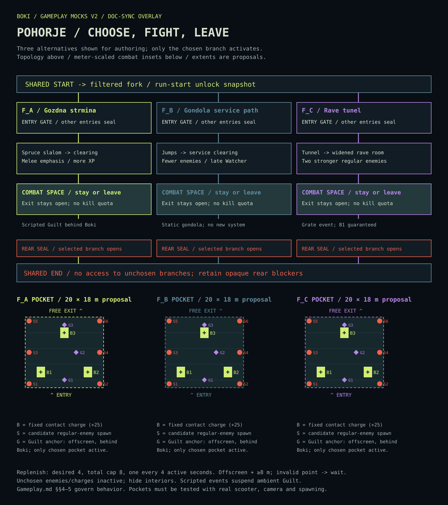
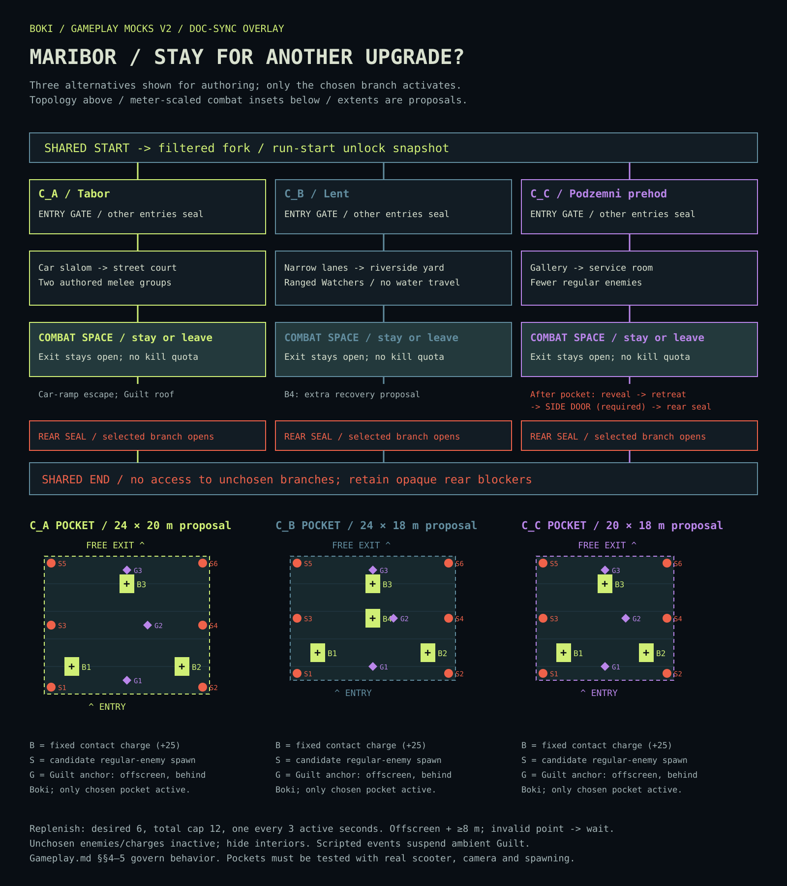
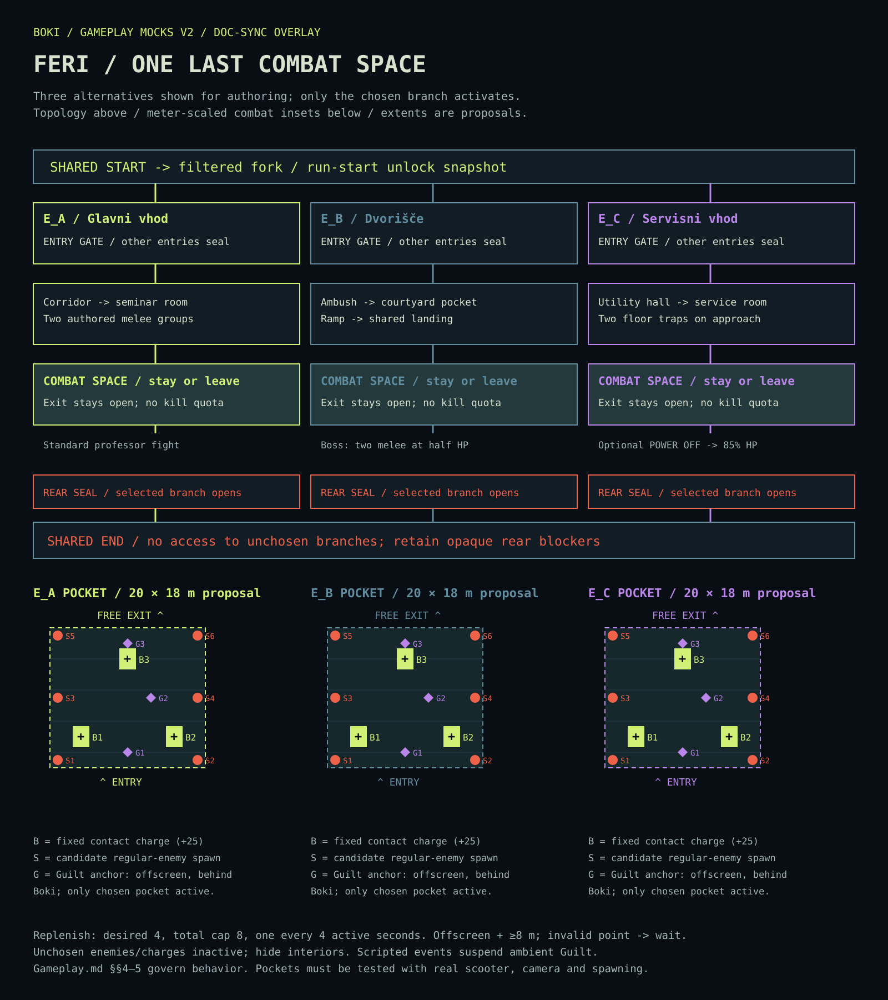
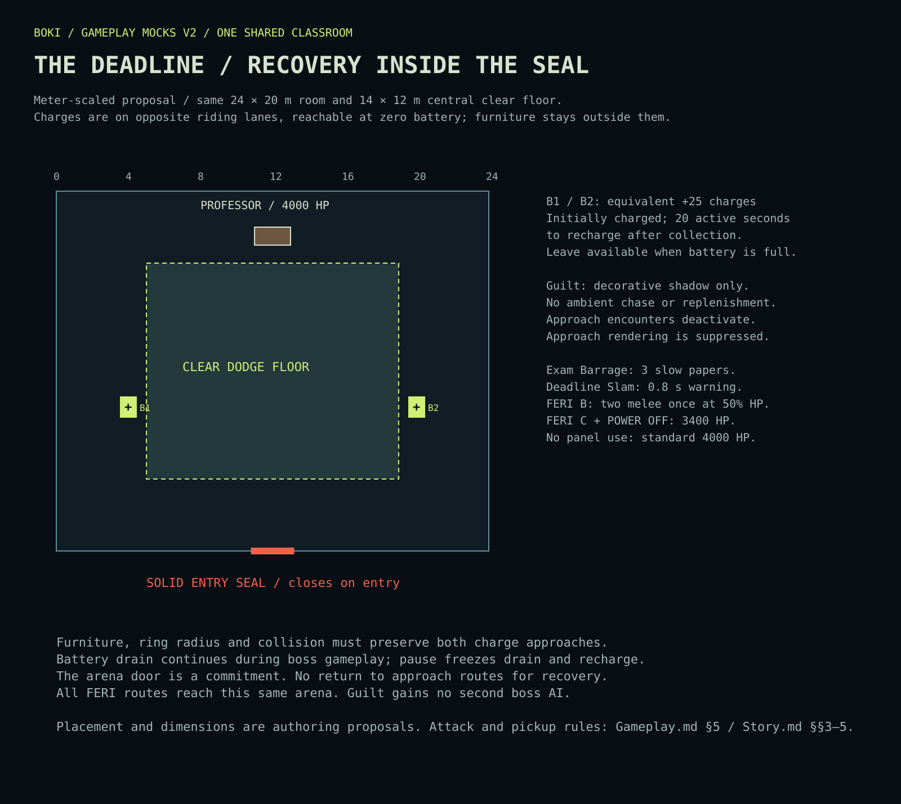

FIGHT FOR XP.
RIDE TO RECHARGE.
LIGHT 42 / 100
XP 11 / 12 · SELECTIONS 2 / 6
Exit is open. Staying offers more XP.
BOKI: LATE TO FERI / LOCAL DESIGN UPDATE
Gameplay overlays for the existing character and world concept art. Editable SVG plans make combat spaces, battery recovery and route isolation explicit.
Kills never recharge battery. Stay to grow stronger; time spent in combat spaces makes Guilt more dangerous. Exit without a wave-clear requirement.
Editable combat plan SVG · Rendered PNG

Editable combat plan SVG · Rendered PNG

Editable combat plan SVG · Rendered PNG

Editable boss plan SVG · Rendered PNG

Editable UI state sheet SVG · UI state PNG
05 / UI STATES / STATIC MOCKS, NO GAMEPLAY CODE
Keep the original compact HUD. Add these states without a new gameplay menu or a mandatory pressure meter.
Exit is open. Staying offers more XP.
SHIFT · boost
Guilt is actively chasing within 10 m.
On activation: +25% boost speed, +50% duration. Snapshot until boost ends; normal cooldown.
UPGRADES 6 / 6
No XP drops or leftover XP collection. Kills still count; battery comes from charges.
Three distinct eligible offers. Every selection consumes one slot; gameplay stays paused until the choice resolves.
+30% base
laser damage
Current +30% → after selection +60%.
+25 current
battery
Only offered below capacity. Clamp to capacity; consumes a selection.
Restore
30 HP
Only offered while injured. One card, never duplicated as a fallback.
Bright acid cell + upright battery silhouette. Contact collects once.
Already full? The charge stays here.
Dark cell + broken outline. Return cue after 20 active seconds.
Timer freezes when paused or outside this space; reentry retains remaining time.
Short return pulse + distinct sound, then available appearance. Low settings must preserve silhouette and state.
Light flicker + heartbeat. Suspend ambient warning during authored Guilt sequences.
Readable shadow and audio cue; ordinary panic advantage stays +25% for 2 s / 5 s cooldown.
Leave for the level exit at any time. City C still requires its scripted side-door escape.
XP thresholds: 3 → 7 → 12 → 18 → 25 → 33 cumulative packs. Roughly three selections in an ordinary run; five or six require risky stays.
Remove capped/ineligible offers. Resolve multiple thresholds sequentially without resuming combat. All bonuses add original base percentages.
The paused offer is a state example, not a live selection. No boost, charge, warning or upgrade behavior is implemented by these mocks.
06 / ENCOUNTER ANNOTATIONS / INITIAL CANONICAL TUNING
20 combat-space seconds of grace → 1.5 s warning → 6 s chase → tier-based rest. Snapshot speed/damage when warning begins; snapshot rest when rest begins.
| Accumulated active time | Rest | Chase speed | Contact damage |
|---|---|---|---|
| 0–29.999 s | 18 s | 4.5 m/s | 10 |
| 30–59.999 s | 15 s | 5.0 m/s | 12 |
| 60–89.999 s | 12 s | 5.5 m/s | 14 |
| 90–119.999 s | 9 s | 6.0 m/s | 16 |
| 120 s+ / capped | 6 s | 6.5 m/s | 18 |
Empty battery multiplies enemy speed by 1.3 afterward. Guilt contact cooldown: 1 s. Pause, upgrades, loading and scripted sequences suspend ambient time. Leaving a combat space retains clock and phase; next level resets both. Boss entry ends pursuit. Upgrades never trigger escalation.
World art and modules · Character and rig references
Original PNGs remain shape/mood references. These overlays govern the added gameplay planning; canonical documents govern the rules. Validate placement, collision, camera, pacing and Windows target-hardware performance during scene integration.